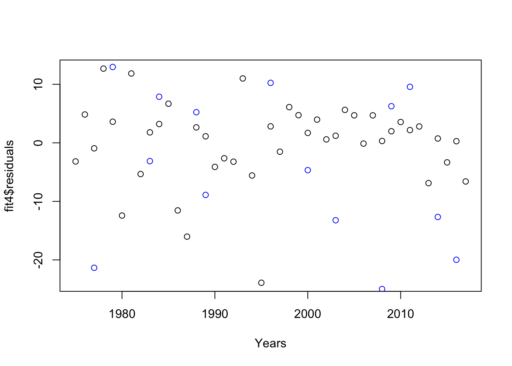

Last updated: 2021-09-14
Checks: 7 0
Knit directory: statsNotes/
This reproducible R Markdown analysis was created with workflowr (version 1.6.2). The Checks tab describes the reproducibility checks that were applied when the results were created. The Past versions tab lists the development history.
Great! Since the R Markdown file has been committed to the Git repository, you know the exact version of the code that produced these results.
Great job! The global environment was empty. Objects defined in the global environment can affect the analysis in your R Markdown file in unknown ways. For reproduciblity it’s best to always run the code in an empty environment.
The command set.seed(20200505) was run prior to running the code in the R Markdown file. Setting a seed ensures that any results that rely on randomness, e.g. subsampling or permutations, are reproducible.
Great job! Recording the operating system, R version, and package versions is critical for reproducibility.
Nice! There were no cached chunks for this analysis, so you can be confident that you successfully produced the results during this run.
Great job! Using relative paths to the files within your workflowr project makes it easier to run your code on other machines.
Great! You are using Git for version control. Tracking code development and connecting the code version to the results is critical for reproducibility.
The results in this page were generated with repository version 63592fa. See the Past versions tab to see a history of the changes made to the R Markdown and HTML files.
Note that you need to be careful to ensure that all relevant files for the analysis have been committed to Git prior to generating the results (you can use wflow_publish or wflow_git_commit). workflowr only checks the R Markdown file, but you know if there are other scripts or data files that it depends on. Below is the status of the Git repository when the results were generated:
Ignored files:
Ignored: .DS_Store
Ignored: .Rhistory
Ignored: .Rproj.user/
Untracked files:
Untracked: Untitled.R
Untracked: analysis/AnchorPCA1.Rmd
Untracked: analysis/dplyr_tutorial.Rmd
Untracked: analysis/draft.Rmd
Untracked: analysis/draft2.Rmd
Untracked: analysis/ebnm_explore.Rmd
Untracked: analysis/hw8_sol.Rmd
Untracked: analysis/jasons_code.Rmd
Untracked: analysis/prelim_data_2019.Rmd
Untracked: analysis/seurat_example.Rmd
Untracked: analysis/sinkhorn.Rmd
Untracked: analysis/stat377_final_project.Rmd
Untracked: analysis/vaccine_trial.Rmd
Untracked: data/73_species.csv
Untracked: data/COVID-19_Cases_US.csv
Untracked: data/SC3_v3_NextGem_DI_Nuclei_5K_Multiplex_count_raw_cloupe.cloupe
Untracked: data/SC3_v3_NextGem_DI_Nuclei_5K_Multiplex_count_raw_feature_bc_matrix.h5
Untracked: data/Traits_73_species.csv
Untracked: data/borealwarming.csv
Untracked: data/cell_data.csv
Untracked: data/neural.rda
Untracked: data/pbmc3k/
Untracked: data/time_series_covid19_confirmed_US.csv
Untracked: data/time_series_covid19_deaths_US.csv
Untracked: hw/348-hw-final-written.pdf
Untracked: hw/AnchorPCA-full.pdf
Untracked: hw/AnchorPCA-writeup.pdf
Untracked: hw/AnchorPCA0.Rmd
Untracked: hw/AnchorPCA0.pdf
Untracked: hw/stat348-final-full.pdf
Untracked: hw/stat348-final-p1.Rmd
Untracked: hw/stat348-final-p1.pdf
Untracked: hw/stat348-final-p2.Rmd
Untracked: hw/stat348-final-p2.pdf
Untracked: hw/stat348_finalp1.RData
Untracked: hw/stat348_finalp1_2.RData
Untracked: hw/stat348_finalp2_1.RData
Untracked: hw/stat348_finalp2_2.RData
Untracked: infect-chance/
Unstaged changes:
Modified: analysis/AnchorPCA0.Rmd
Modified: analysis/prelim_data_2018.Rmd
Modified: hw/stat348-final-script.R
Modified: script/plot_ebnm_objective.R
Note that any generated files, e.g. HTML, png, CSS, etc., are not included in this status report because it is ok for generated content to have uncommitted changes.
These are the previous versions of the repository in which changes were made to the R Markdown (analysis/prelim_data_2020.Rmd) and HTML (docs/prelim_data_2020.html) files. If you’ve configured a remote Git repository (see ?wflow_git_remote), click on the hyperlinks in the table below to view the files as they were in that past version.
| File | Version | Author | Date | Message |
|---|---|---|---|---|
| Rmd | 63592fa | zihao12 | 2021-09-14 | prelim 2020 |
| html | 24f018c | zihao12 | 2021-09-04 | Build site. |
| Rmd | 8c7eae5 | zihao12 | 2021-09-04 | 2020 data |
rm(list = ls())
library(dplyr)Warning: package 'dplyr' was built under R version 3.5.2
Attaching package: 'dplyr'The following objects are masked from 'package:stats':
filter, lagThe following objects are masked from 'package:base':
intersect, setdiff, setequal, unionlibrary(lme4)Warning: package 'lme4' was built under R version 3.5.2Loading required package: MatrixWarning: package 'Matrix' was built under R version 3.5.2species = read.csv("data/73_species.csv")
traits = read.csv("data/Traits_73_species.csv")Statistical Issues: look at the data processing part. The raw data records individual ringing events. Authors aggregate them into event for a nest. There are a lot of assumptions and ad hoc decisions. Moreover, the possible bias and variance introduced by preprocessing is not modeled.
Below I only show 1 species as an example…
spec.names <- c("FICHYP", "VANVAN", "PASDOM", "BUTBUT")
spec.name = 'BUTBUT'
data1 = species[species$Species == spec.name & species$BZ == "HB" & species$Year == 1980 ,]
data2 = species[species$Species == spec.name & species$BZ == "HB" & species$Year == 2013,]
xlim = c(150, 195)
ylim = c(0, 0.065)
plot(density(data1$Dayofyear), col = "grey",
xlim = xlim, ylim = ylim, main = spec.name)
lines(density(data2$Dayofyear), col = "blue")
| Version | Author | Date |
|---|---|---|
| 24f018c | zihao12 | 2021-09-04 |
Next let’s look at density estimates with mult-modals. One example below (i didn’t attempt to make the density plot similar to the one in paper)
combo = c("PASDOM", "SB", 1979)
data1 = species[species$Species == combo[1] & species$BZ == combo[2] & species$Year == combo[3],]
hist(data1$Dayofyear, prob = TRUE, breaks = 50)
lines(density(data1$Dayofyear))
| Version | Author | Date |
|---|---|---|
| 24f018c | zihao12 | 2021-09-04 |
In this example i don’t think the density estimates represent raw data well. The smaller mode is due to only one very productive ringing days, whereas the desnity plot seems to give the impression of many consecutive higher ringing days. In this case it may not represent nesting bahavior of birds, but rather probably a lucky bird watcher on that day. (Can say more if i understand the data preprocessing part)
Why examining wing length? We use ringing events as a proxy for nesting events. If ringers start earlier every year, and there is no actual change in nestling events, we can expect to see the “fake” advancement in the data. If recorded wing length remains unchanged, that means the relative time interval between ringing and nesting remain unchanged. Thus ringing events are valid proxy for analysing nesting events.
Ringer bahavior & effort is an important confounder, and if it changes with time, it can make our conclusion about nesting invalid. If they spend more effort in the beginning versus the end, we might see artificial advancement of the ending of nesting events, simply because the sampling efforts is too small (also biased to underestimation) to estimate the 95% percentile
Their arguments: annual effort levels stabilized in all zones by 1990 and remained relatively constant thereafter; the proportions of nests observed in the beginning and end of the breeding season are relatively constant over the study period.
Strength:
Weakness: Efforts decrease to 1990 and later stabilize. Then the estimate of 5% and 95% would have different variance/uncertainty. However this uncertainty is not reflected in the model.
What assumption to distinguish? If there is one type of bird that don’t change behavior for sure, then we can use it to distinguish changes from ringer behavior.
compute_duration <- function(dataset, year){
x = quantile(dataset[dataset$Year == year,"Dayofyear"], probs = c(0.05, 0.95))
return(as.numeric(x[2] - x[1]))
}
dataset = species[species$Species == "CORRAX", ]
compute_duration(dataset, 1997)[1] 35Years = sort(unique(dataset$Year))
y = sapply(Years, FUN = compute_duration, dataset = dataset)
fit = lm(y ~ Years)
summary(fit)
Call:
lm(formula = y ~ Years)
Residuals:
Min 1Q Median 3Q Max
-8.0529 -3.0285 -0.7607 2.9388 10.2893
Coefficients:
Estimate Std. Error t value Pr(>|t|)
(Intercept) 328.09809 104.78351 3.131 0.00334 **
Years -0.15192 0.05246 -2.896 0.00624 **
---
Signif. codes: 0 '***' 0.001 '**' 0.01 '*' 0.05 '.' 0.1 ' ' 1
Residual standard error: 3.913 on 38 degrees of freedom
Multiple R-squared: 0.1808, Adjusted R-squared: 0.1592
F-statistic: 8.386 on 1 and 38 DF, p-value: 0.006237plot(Years, y, col = "black")
lines(Years, fit$fitted.values, col = "blue")
| Version | Author | Date |
|---|---|---|
| 24f018c | zihao12 | 2021-09-04 |
plot(fit$fitted.values, fit$residuals)
| Version | Author | Date |
|---|---|---|
| 24f018c | zihao12 | 2021-09-04 |
The decreasing trend is obvious by looking at the data. The linear model confirms this.
Let’s look at the two BZ where CORRAX is present
table(dataset$BZ)
HB MB NB SB
0 1032 0 2858 compute_duration_BZ <- function(dataset, year, BZ){
x = quantile(dataset[dataset$Year == year & dataset$BZ == BZ,"Dayofyear"], probs = c(0.05, 0.95))
return(as.numeric(x[2] - x[1]))
}
year_ = c()
BZ_ = c()
Duration_ = c()
for(i in Years){
for(bz in c("MB", "SB")){
year_ = c(year_, i)
BZ_ = c(BZ_, bz)
Duration_ = c(Duration_, compute_duration_BZ(dataset, i, bz))
}
}
out = na.omit(data.frame(year = year_, BZ = BZ_, Duration = Duration_))
attach(out)
fit1 = lm(Duration ~ BZ,data = out)
fit2 = lm(Duration ~ year + BZ,data = out)
fit3 = lm(Duration ~ year * BZ,data = out)
anova(fit1, fit2) ## actually no need; directly read from summary(fit2)Analysis of Variance Table
Model 1: Duration ~ BZ
Model 2: Duration ~ year + BZ
Res.Df RSS Df Sum of Sq F Pr(>F)
1 62 1287.0
2 61 1147.5 1 139.6 7.4213 0.008397 **
---
Signif. codes: 0 '***' 0.001 '**' 0.01 '*' 0.05 '.' 0.1 ' ' 1anova(fit2, fit3)Analysis of Variance Table
Model 1: Duration ~ year + BZ
Model 2: Duration ~ year * BZ
Res.Df RSS Df Sum of Sq F Pr(>F)
1 61 1147.5
2 60 1140.6 1 6.8471 0.3602 0.5507summary(fit2)
Call:
lm(formula = Duration ~ year + BZ, data = out)
Residuals:
Min 1Q Median 3Q Max
-10.0212 -2.6949 -0.7176 3.6836 12.4909
Coefficients:
Estimate Std. Error t value Pr(>|t|)
(Intercept) 309.37581 105.65610 2.928 0.00479 **
year -0.14395 0.05284 -2.724 0.00840 **
BZSB 2.39901 1.12537 2.132 0.03706 *
---
Signif. codes: 0 '***' 0.001 '**' 0.01 '*' 0.05 '.' 0.1 ' ' 1
Residual standard error: 4.337 on 61 degrees of freedom
Multiple R-squared: 0.1784, Adjusted R-squared: 0.1515
F-statistic: 6.623 on 2 and 61 DF, p-value: 0.002495confint(fit2) 2.5 % 97.5 %
(Intercept) 98.1033932 520.64823611
year -0.2496099 -0.03828765
BZSB 0.1486933 4.64932268plot(year, Duration, col = c("blue", "red")[BZ])
legend(x="topright", legend = levels(BZ), col=c("blue", "red"), pch=1)
| Version | Author | Date |
|---|---|---|
| 24f018c | zihao12 | 2021-09-04 |
detach(out)So year effects are siginifant; among two models with BZ & Year effects, anova preferred the simple one. We can see the decrease trend is significant with 95% CI \([-0.2496099, -0.03828765]\). BZ is also significant. That fit3 is not favored means the slope for two BZs are the same.
We know \(\sqrt{n} (X_{[np]} - x_p) \longrightarrow N(0, \frac{p(1-p)}{f^2(x_p)})\). If we assume the \(f\) only changes location but not its shape, then here \(\text{Var}(y_i) \propto \frac{1}{n_i}\), where \(n_i\) is the number of estimations for year \(i\). Thus the equal variance assumption is violated.
We can fix this by weighted least square, with weight \(W = \text{diag}(n_1, ..., n_n)\)
compute_count_BZ <- function(dataset, year, BZ){
return(nrow(dataset[dataset$Year == year & dataset$BZ == BZ,]))
}
dataset = species[species$Species == "HIRRUS",]
Years = sort(unique(dataset$Year))
counts = sapply(Years, compute_count_BZ, dataset = dataset, BZ = "SB")
Duration = sapply(Years, compute_duration_BZ, dataset = dataset, BZ = "SB")
out <- data.frame(Years = Years, Duration = Duration, counts = counts)
fit4 = lm(Duration ~ Years, data = out)
fit5 = lm(Duration ~ Years, weights = counts, data = out)
plot(Years, fit4$residuals)
points(Years, fit5$residuals * sqrt(counts), col = "blue")
| Version | Author | Date |
|---|---|---|
| 24f018c | zihao12 | 2021-09-04 |
From the residual plot we can see clearly that weighted least square gets more constant variance, whereas OLS has more variance with smaller counts, less variance with bigger counts.
summary(fit4)
Call:
lm(formula = Duration ~ Years, data = out)
Residuals:
Min 1Q Median 3Q Max
-23.909 -3.201 1.208 3.786 12.684
Coefficients:
Estimate Std. Error t value Pr(>|t|)
(Intercept) -707.39446 173.19153 -4.084 2e-04 ***
Years 0.37902 0.08677 4.368 8.32e-05 ***
---
Signif. codes: 0 '***' 0.001 '**' 0.01 '*' 0.05 '.' 0.1 ' ' 1
Residual standard error: 7.061 on 41 degrees of freedom
Multiple R-squared: 0.3176, Adjusted R-squared: 0.301
F-statistic: 19.08 on 1 and 41 DF, p-value: 8.322e-05summary(fit5)
Call:
lm(formula = Duration ~ Years, data = out, weights = counts)
Weighted Residuals:
Min 1Q Median 3Q Max
-206.695 -51.409 -8.898 27.252 141.623
Coefficients:
Estimate Std. Error t value Pr(>|t|)
(Intercept) -662.09032 170.96999 -3.873 0.000380 ***
Years 0.35728 0.08541 4.183 0.000148 ***
---
Signif. codes: 0 '***' 0.001 '**' 0.01 '*' 0.05 '.' 0.1 ' ' 1
Residual standard error: 81.23 on 41 degrees of freedom
Multiple R-squared: 0.2991, Adjusted R-squared: 0.282
F-statistic: 17.5 on 1 and 41 DF, p-value: 0.0001478First process data
traits2 <- data.frame(Broods = traits$Broods,
Mig = !(traits$Mig == "R" | traits$Mig == "S")) ## Mig: TRUE means long distance migration
rownames(traits2) <- traits$Abbreviation
by_pair = group_by(species, Year, Species, BZ)
dataset <- summarise(by_pair,
count = n(),
n_early = sum(Dayofyear < 170),
n_late = count - n_early,
p = n_early/count)
dataset$broods <- traits2[dataset$Species,"Broods"]
dataset$mig <- traits2[dataset$Species,"Mig"]
dataset$Year_scaled <- scale(dataset$Year, center = TRUE, scale = TRUE)
head(dataset)# A tibble: 6 x 10
# Groups: Year, Species [4]
Year Species BZ count n_early n_late p broods mig Year_scaled[,1]
<int> <fct> <fct> <int> <int> <int> <dbl> <int> <lgl> <dbl>
1 1975 ACCGEN HB 78 47 31 0.603 1 FALSE -1.78
2 1975 ACCGEN MB 35 8 27 0.229 1 FALSE -1.78
3 1975 ACCGEN SB 165 59 106 0.358 1 FALSE -1.78
4 1975 ACCNIS SB 34 0 34 0 1 FALSE -1.78
5 1975 AEGFUN SB 84 69 15 0.821 1 FALSE -1.78
6 1975 ALCTOR HB 36 0 36 0 1 FALSE -1.78If \(np, nq\) are bith large (say \(> 10\)), then \(Bin(n, p)\) is well approximated by gaussian. Let’s look at how many data points do not satisfy this.
sum((dataset$count - dataset$n_early) < 10) / nrow(dataset)[1] 0.1718197sum(dataset$n_early < 10) / nrow(dataset)[1] 0.3500118There is quite a lot of data points not well approximated by gaussian. Thus I will go with binary GLM below (I will just try logistic link).
lrt <- function(fit1, fit2){
1 - pchisq(2 * as.numeric(logLik(fit2) - logLik(fit1)), df = df.residual(fit1) - df.residual(fit2))
}attach(dataset)
response = matrix(append(n_early, n_late), ncol = 2)
model1.1 = glm(response ~ Year_scaled, family = "binomial")
summary(model1.1)
Call:
glm(formula = response ~ Year_scaled, family = "binomial")
Deviance Residuals:
Min 1Q Median 3Q Max
-38.954 -7.824 -2.382 7.632 45.493
Coefficients:
Estimate Std. Error z value Pr(>|z|)
(Intercept) -0.423836 0.002280 -185.93 <2e-16 ***
Year_scaled 0.184141 0.002311 79.68 <2e-16 ***
---
Signif. codes: 0 '***' 0.001 '**' 0.01 '*' 0.05 '.' 0.1 ' ' 1
(Dispersion parameter for binomial family taken to be 1)
Null deviance: 565528 on 4236 degrees of freedom
Residual deviance: 559124 on 4235 degrees of freedom
AIC: 572771
Number of Fisher Scoring iterations: 4Adding BZ
model1.2 = glm(response ~ Year_scaled + BZ, family = "binomial")
model1.3 = glm(response ~ Year_scaled * BZ, family = "binomial")
lrt(model1.1, model1.2)[1] 0lrt(model1.2, model1.3)[1] 0Obviously we use model1.3
First, use fixed effects for species. Compare with species intercept only model, we can see there are differences in year effects among species
model2.1 = glm(response ~ Year_scaled * BZ + Species, family = "binomial")
model2.2 = glm(response ~ Year_scaled * BZ + Year_scaled * Species, family = "binomial")
lrt(model1.3, model2.1)[1] 0lrt(model2.1, model2.2)[1] 0#summary(model3)model3.1 = glm(response ~ BZ + broods + Year_scaled + Year_scaled:BZ, family = "binomial")
model3.2 = glm(response ~ BZ + broods + Year_scaled + Year_scaled:BZ:broods, family = "binomial")
lrt(model1.3, model3.1)[1] 0lrt(model3.1, model3.2)[1] 0The answer is yes.
model4.1 = glm(response ~ BZ + mig + Year_scaled + Year_scaled:BZ, family = "binomial")
model4.2 = glm(response ~ BZ + mig + Year_scaled + Year_scaled:BZ:mig, family = "binomial")
lrt(model1.3, model4.1)[1] 0lrt(model4.1, model4.2)[1] 0
sessionInfo()R version 3.5.1 (2018-07-02)
Platform: x86_64-apple-darwin15.6.0 (64-bit)
Running under: macOS 10.15.7
Matrix products: default
BLAS: /Library/Frameworks/R.framework/Versions/3.5/Resources/lib/libRblas.0.dylib
LAPACK: /Library/Frameworks/R.framework/Versions/3.5/Resources/lib/libRlapack.dylib
locale:
[1] en_US.UTF-8/en_US.UTF-8/en_US.UTF-8/C/en_US.UTF-8/en_US.UTF-8
attached base packages:
[1] stats graphics grDevices utils datasets methods base
other attached packages:
[1] lme4_1.1-21 Matrix_1.2-17 dplyr_0.8.5 workflowr_1.6.2
loaded via a namespace (and not attached):
[1] Rcpp_1.0.5 pillar_1.4.4 compiler_3.5.1 later_1.1.0.1
[5] nloptr_1.2.1 git2r_0.26.1 tools_3.5.1 boot_1.3-22
[9] digest_0.6.25 evaluate_0.14 tibble_2.1.3 nlme_3.1-140
[13] lattice_0.20-38 pkgconfig_2.0.3 rlang_0.4.5 cli_2.0.2
[17] yaml_2.2.0 xfun_0.8 stringr_1.4.0 knitr_1.28
[21] vctrs_0.2.4 fs_1.3.1 rprojroot_1.3-2 grid_3.5.1
[25] tidyselect_1.0.0 glue_1.4.1 R6_2.4.1 fansi_0.4.1
[29] rmarkdown_2.1 minqa_1.2.4 purrr_0.3.4 magrittr_1.5
[33] whisker_0.3-2 backports_1.1.7 promises_1.1.1 htmltools_0.5.0
[37] splines_3.5.1 MASS_7.3-51.4 assertthat_0.2.1 httpuv_1.5.4
[41] utf8_1.1.4 stringi_1.6.2 crayon_1.3.4